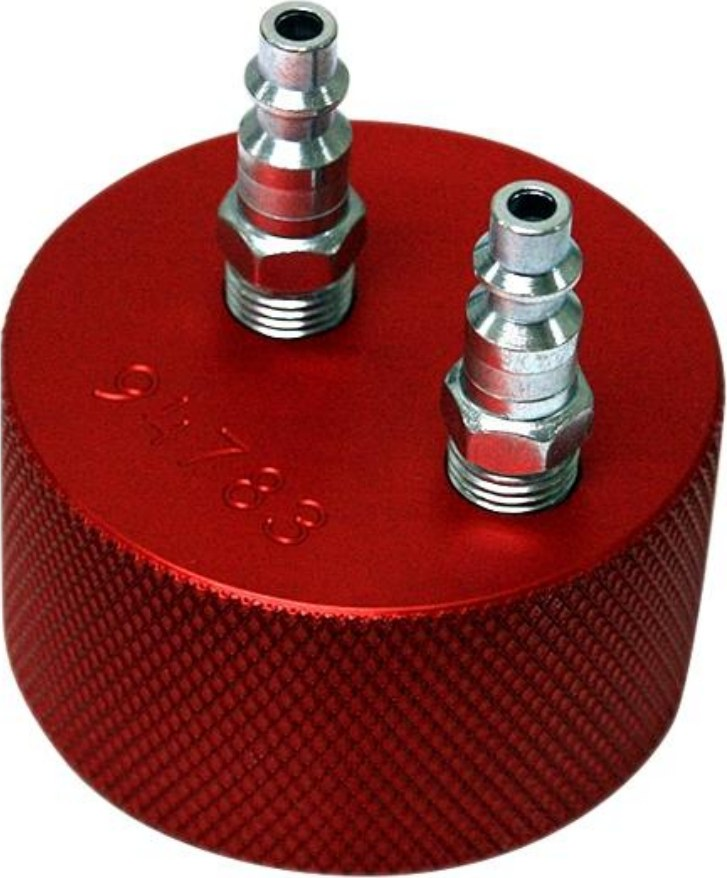
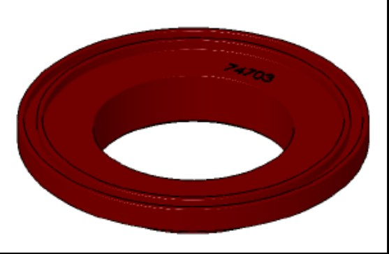
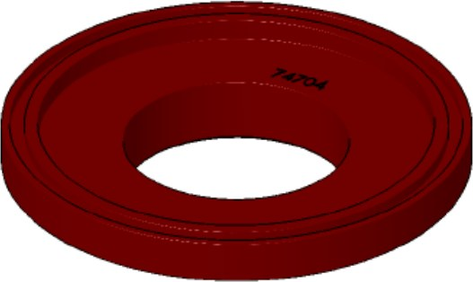
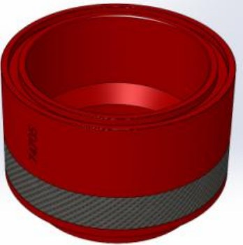
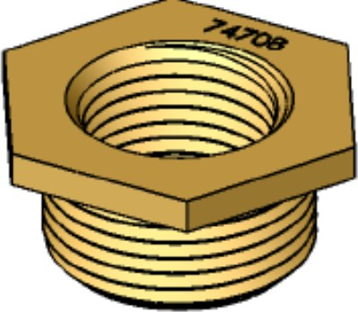
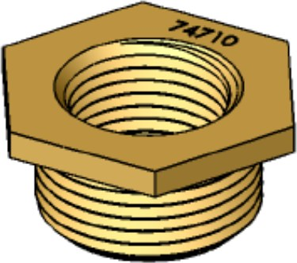
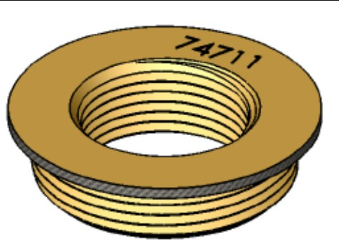
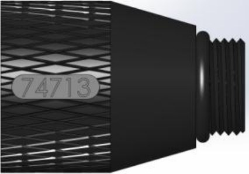

Doc no. MOC-TSB-12-22 // Vol. 12 No. 22 // Jul 31, 2012 // Transmission
Transmission Adapter for Automatic- Transmission Service
New94783
MOC has developed a new adapter for use on Transmissions equipped with a spin-on filter. This adapter takes the place of the filter.
What's new
This Adapter is designed to work with threaded inserts and collars to fit the many different sizes and threads of spin-on filters.
Contact
For more information, contact the Machine & Equipment Department at 866.244.6621.








Part numbers
| Part No. | Description | Notes |
|---|---|---|
| 74703 | O-Ring Plate (For 3-3/8" O.D. O-rings) | |
| 74704 | O-Ring Plate (For 4" O.D. O-rings) | |
| 74705 | Outer Extension Sleeve (For use with | |
| 74706 | Threaded Insert for 13/16"-16 Thread | |
| 74707 | Threaded Insert for 3/4"-16 Thread | |
| 74708 | Threaded Insert for M22-1.5 Thread | |
| 74709 | Threaded Insert for M20-1.5 Thread | |
| 74710 | Threaded Insert for M18-1.5 Thread | |
| 74711 | Threaded Insert for 1"-16 Thread | |
| 74712 | Extension Sleeve for 1"-12 Thread | |
| 74713 | Threaded Insert for 1-1/2"-16 Thread | |
| 94783 | Adapter, Transmission, Spin-on Filter |